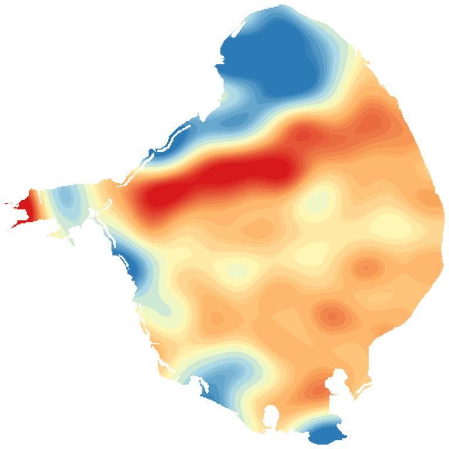

LakeScope › FL
Lake Okeechobee today
Updated 2026-11-14 - Atlas Labs
Some algae possible, 76°F water, level rising, near normal, windy Saturday (15 mph N).
Water level
14.55 ft
U.S. Army Corps of Engineers - 2026-11-14
7-day trend: rising (+0.38 ft). Compared with normal for this date: -0.3 ft (same weeks, 2023-2025).
Water clarity and algae
Some algae possible Last clear view: a few days ago. 1 cloudy pass since.
Surface temperature
76°F
seen from space on 2026-11-11

Weather, next 3 days
| Day | Sky | High / low | Wind | Rain |
|---|---|---|---|---|
| Saturday | Sunny | 66 / 57°F | 15 mph N | 0% |
| Sunday | Sunny | 73 / 65°F | 13 mph N | 0% |
| Monday | Mostly Sunny | 75 / 68°F | 16 mph NE | 5% |
Sunrise 06:42 - sunset 17:32 - Waxing crescent. National Weather Service.
Get the LakeScope app: alerts and the 3-D view of Lake Okeechobee